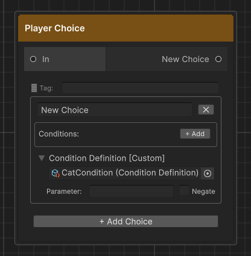

Conditions
Conditions control whether a player choice is available at runtime. Threader has two distinct systems — you can use either or both on the same choice.
| System | Requires C#? | Best for |
|---|---|---|
| Inline variable conditions | No | Checking DialogueVariables values set from the graph |
| Custom conditions (C#) | Yes | Anything that lives in your game code — inventory, quests, reputation, time of day |
When both are used on the same choice, all must pass for the choice to be selectable.
What happens when a condition fails
Each inline condition row has a Hide checkbox that controls the UI presentation:
| Hide checked | The choice is completely removed from the list (IsHidden = true) |
|---|---|
| Hide unchecked | The choice is shown greyedout and locked (IsLocked = true, unclickable) |
The custom ConditionDefinition slot has a Negate toggle and the definition asset has a When Missing setting (see below), but no per-definition Hide — if it fails, the choice is locked but not hidden. If you need hiding behaviour from a custom condition, use the Negate toggle combined with a variable that your C# code writes.
Inline variable conditions (no C# required)
These are added directly inside each choice card in the Player Choice node editor.
Setup in 3 steps
Step 1 — Create a DialogueVariables asset (if you haven't already):
Right-click in the Project window → Create → Threader → Variables Store.
Add variables in the Inspector. See Variables for full detail.
Step 2 — Assign the asset to DialogueManager:
Drag the asset into DialogueManager → Variables List.
Step 3 — Add conditions in the graph:
Open a Player Choice node. Inside each choice card, click + Add in the Conditions box.
| Field | Description |
|---|---|
| Variable | Dropdown of all variable names from assigned assets |
| Operator | Equal / NotEqual / GreaterThan / GreaterOrEqual / LessThan / LessOrEqual |
| Value | The comparison value — true/false, a number, or a string |
| Hide | Hides the choice entirely when this row fails |
| NOT | Inverts this row's result before it contributes |
| ✕ | Removes this row |
AND logic
All rows on a choice must pass for the choice to be selectable. There is no built-in OR. To achieve OR logic, duplicate the choice and put a different condition on each copy — they lead to the same branch.
Variable names are case-sensitive
foundCat ≠ FoundCat. If you type a name that doesn't exist in any assigned asset, the row is silently skipped and the choice always appears — double-check spelling if a condition has no effect.
Example
Choice: "Offer the fish"
Conditions:
hasFish Equal true Hide = ✓
gold GreaterOrEqual 10 Hide = ✗
Result: the choice is hidden until hasFish is true. Once hasFish is true, if gold < 10 the choice shows but is greyed out.
Branch Node conditions
The Branch Node [B] uses the same condition system (Variable / Operator / Value / NOT), but instead of locking/hiding a choice it routes execution to a True or False output port. All rows are AND logic — True port if all pass, False port if any fail.
See Node Reference — Branch Node for full field details.
Custom conditions (C# required)
Use this when the state you need to check lives in your game code — an inventory system, a quest log, a reputation tracker, etc.
The workflow has two parts: 1. Register a handler in C# that evaluates the condition 2. Link a ConditionDefinition asset to a choice in the graph
Step 1 — Register a handler
Option A: Delegate (simplest)
Call ConditionService.Register from Awake on any MonoBehaviour. The lambda closes over whatever your game code exposes.
public class PlayerWallet : MonoBehaviour
{
public int Gold = 100;
void Awake()
{
ConditionService.Register("GoldGTE", param =>
{
int.TryParse(param, out int needed);
return Gold >= needed;
});
}
void OnDestroy() => ConditionService.Unregister("GoldGTE");
}
The delegate is stored in a static dictionary keyed by the condition key string. Multiple delegates can be registered from multiple MonoBehaviours — each has its own key.
Always
UnregisterinOnDestroy(orOnDisableif your object might be disabled). Failing to unregister means the delegate persists even after the object is destroyed — the next scene load might fail with a null reference if the lambda captures a destroyed object.
Option B: ConditionProvider subclass (all conditions in one asset)
Create a ScriptableObject that inherits ConditionProvider and override Evaluate. Good when you have many conditions and want them in one organized, inspectable place.
[CreateAssetMenu(menuName = "Threader/My Condition Provider")]
public class GameConditionProvider : ConditionProvider
{
public override bool Evaluate(ConditionDefinition def, string param)
{
switch (def.GetKey())
{
case "GoldGTE":
return int.TryParse(param, out int n) && Economy.Instance.Gold >= n;
case "HasItem":
return Inventory.Instance.Has(param);
case "QuestComplete":
return QuestManager.Instance.IsComplete(param);
default:
// Fall back to the definition's WhenMissing setting
return def.WhenMissing == WhenMissingBehaviour.Allow;
}
}
}
Create an instance of this asset and assign it to DialogueManager → Condition Provider in the Inspector, or call ConditionService.SetProvider(myProvider) from a bootstrap script.
Evaluation order
When a choice has a ConditionDefinition, ConditionService.Evaluate resolves in this priority order:
- VariableConditionDefinition — if the asset is a
VariableConditionDefinition, it self-evaluates directly (no delegate or provider needed) - Registered delegate — if a delegate is registered for this key, it runs
- Active ConditionProvider — if a provider is assigned and no delegate matched, the provider's
Evaluateis called WhenMissingfallback — if none of the above handled this key, the definition'sWhenMissingsetting decides the result
Step 2 — Create a ConditionDefinition asset
Right-click in the Project window → Create → Threader → Condition (Custom).
| Field | Description |
|---|---|
| Key | Must exactly match the string you used in Register() or def.GetKey(). Defaults to the asset file name. |
| Display Name | Human-readable label shown in the Inspector |
| Category | Groups assets in pickers as Category/Name |
| Parameter Hint | Tooltip shown when browsing in the Inspector — describe what the parameter string means |
| When Missing | Allow (default) — choice always shown when no handler is registered. Safe during development. Block — choice locked when no handler is registered. Use for must-be-earned conditions. |
Step 3 — Link the asset to a choice
- Open the graph in the Graph Editor
- Click the Player Choice node to select it
- Inside the choice card, expand the Condition Definition [Custom] foldout
- Click the object picker (⊙) on the right of the asset slot and select your
ConditionDefinitionasset - Type a value in Parameter — this is the string your lambda or
Evaluatereceives - Check Negate if you want the result inverted

The ConditionDefinition is set directly on the choice card in the graph editor canvas — not on the
.assetfile in the Inspector.
ConditionStoreProvider (built-in provider)
Threader ships with ConditionStoreProvider — a ready-to-use ConditionProvider subclass that evaluates against ConditionStore, a static in-memory key/value dictionary.
Assign ConditionStoreProvider to DialogueManager → Condition Provider and then write your game state into ConditionStore from anywhere:
// Write from your game code
ConditionStore.SetInt("Gold", economy.Gold);
ConditionStore.Set("HasSword", inventory.Has("sword") ? "true" : "false");
In the graph, set the ConditionDefinition key to the same string you used in ConditionStore.Set/SetInt. The Parameter field on the choice card controls how the stored value is tested:
| Parameter | Behaviour |
|---|---|
| (empty) | Key must exist and be truthy — non-empty, not "0", not "false" |
"true" |
Stored value equals "true" (case-insensitive) |
"Excalibur" |
Stored value equals the string exactly (case-insensitive) |
">= 50" |
Numeric comparison — also supports >, <=, <, ==, != |
ConditionStore is in-memory only — it resets when you start Play mode. After loading a save, repopulate it before starting any dialogue.
VariableConditionDefinition (no-code asset condition)
If you want a reusable condition asset that checks a DialogueVariables store without any C# handler, create a VariableConditionDefinition:
Right-click in the Project window → Create → Threader → Variable Condition.
| Field | Description |
|---|---|
| Variables | Drag a DialogueVariables asset here |
| Variable Name | The variable to check |
| Operator | Equal / NotEqual / GreaterThan / etc. |
| Value | The comparison value |
Drag this asset into a choice's Condition Definition slot. No Register call needed — it self-evaluates by calling the asset's GetBool/GetInt/GetString methods directly.
This is useful for creating reusable condition assets that can be shared across multiple graphs — for example, a HasGoldCond.asset that multiple shops all reference.
Combining both systems
A choice can carry both inline conditions and a ConditionDefinition. The evaluation order is:
- All inline variable condition rows are checked (AND logic)
- If any inline condition fails → choice is locked/hidden immediately,
ConditionDefinitionis skipped - If all inline conditions pass →
ConditionDefinitionis evaluated - If that fails → choice is locked
This means inline conditions act as a fast-path guard — expensive C# lookups in your provider are only reached if the cheap variable checks all pass.
Debugging conditions
If a condition isn't behaving as expected:
- Open the Dialogue Preview Window (
Shift+Alt+P) — enable Show hidden to see choices that are being hidden, and check which conditions are evaluated against your seeded variable values - Variable names are case-sensitive — double-check spelling in both the graph and the asset
- Delegate not registered — if
WhenMissing = Blockand nothing is registered, the choice locks silently. Add aDebug.Loginside your delegate to confirm it fires. - Provider not assigned — if you use Option B, make sure the asset is in DialogueManager → Condition Provider or
ConditionService.SetProviderwas called. CheckConditionService.Providerin code to verify. - Multiple variables assets — the runner searches assets in list order. If two assets have the same variable name, only the first found is used.